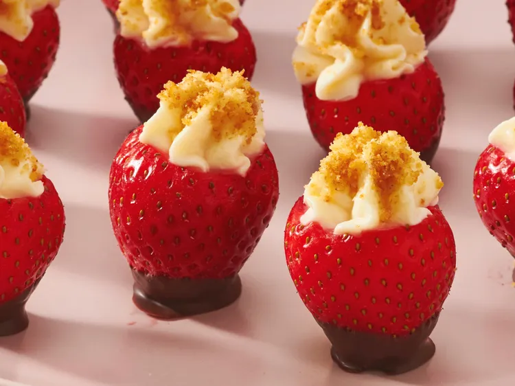

Line a baking sheet with waxed paper. Place graham cracker crumbs into a shallow bowl.Beat cream cheese, confectioners' sugar, and vanilla in a bowl until smooth. Spoon mixture into a piping bag fitted with a large round tip. With a sharp paring knife, cut a cone shape out of the top of each strawberry to leave a small hollow. Pipe about 1 tablespoon of the cream cheese filling into each strawberry, making sure the filling overflows a bit out of the top of the strawberry. Hold each strawberry upside down to dip filling into crumbs until coated. Melt chocolate and canola oil in a microwave-safe glass or ceramic bowl in 30-second intervals, stirring after each interval, until warm and smooth, 1 to 3 minutes (depending on your microwave). Dip strawberry tips into melted chocolate, then place onto the prepared baking sheet and refrigerate until set. Serve and enjoy!